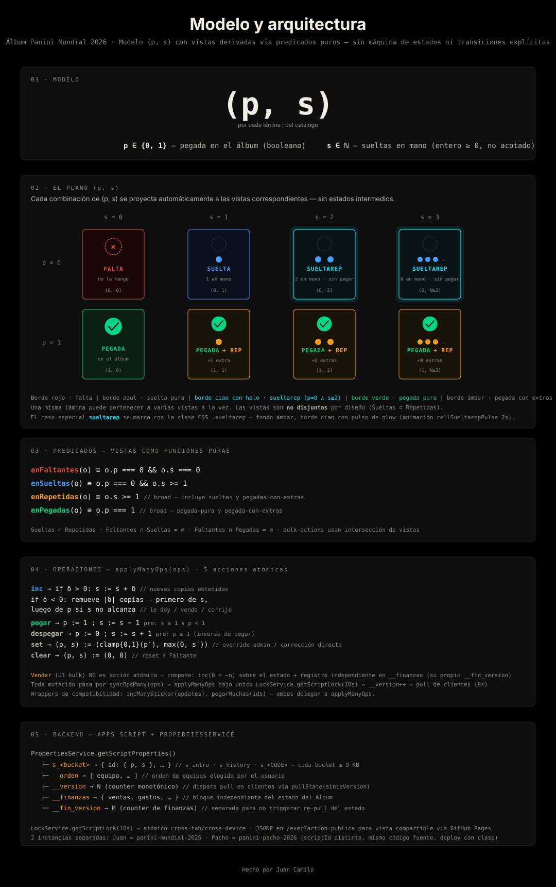

Álbum Panini Mundial 2026 — una tabla Laminas(id, p, s) con vistas σ-derivadas vía predicados puros. Codd 1970 + Redux 2015. Sin máquina de estados.

La estructura de datos es relacional en el sentido de Codd (1970): una tupla (id, p, s) por lámina forma la relación base Laminas, y las vistas (Faltantes, Sueltas, Repetidas, Pegadas, Sueltarep) son relaciones derivadas obtenidas vía la operación de selección σ del álgebra relacional — exactamente lo que hace una VIEW en SQL. La diferencia con un RDBMS pleno: tenemos una sola relación efectiva, sin joins, y el storage subyacente es key-value (PropertiesService), no un motor SQL.
La mecánica de actualización es estado derivado en el sentido de Redux/MobX (2015+): la fuente única de verdad es (p, s), todo lo demás se computa al vuelo vía predicados puros. enFaltantes, enSueltas, enRepetidas y enPegadas son selectores. Las mutaciones se canalizan por una sola función (applyManyOps) — el reducer.
¿Por qué no es una máquina de estados? Una FSM tiene un conjunto finito de estados nombrados con transiciones explícitas entre ellos. Acá los "estados" no se almacenan ni se transicionan — son proyecciones del dato. Cuando s cambia de 0 a 1 no hay transición FALTA → SUELTA; solo se incrementa un contador y los predicados reclasifican automáticamente.